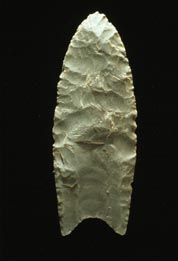

Home
Welcome
I'm interested in systems, technology, complexity, and emergence, and catching little glimpses of the underlying structure of the world. Somewhere along the line, I'd like to use this to make better decisions, and navigate the complex and baffling systems through which we swim. I hope you find something of use.
Posts
- Intro - September 23, 2019
Post archives.